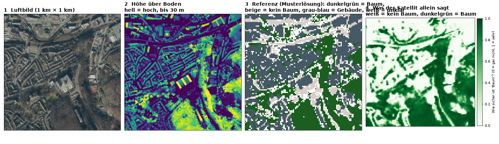
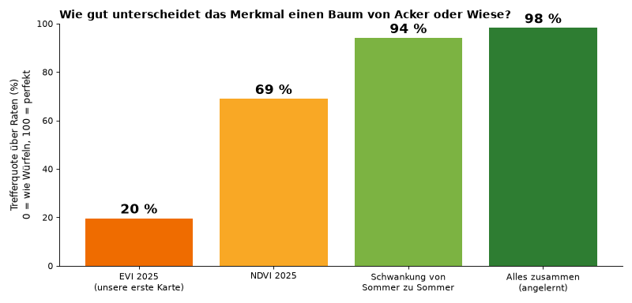
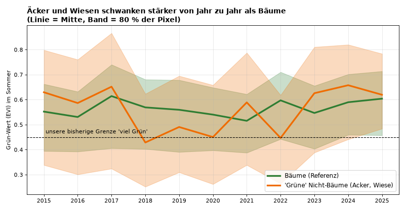
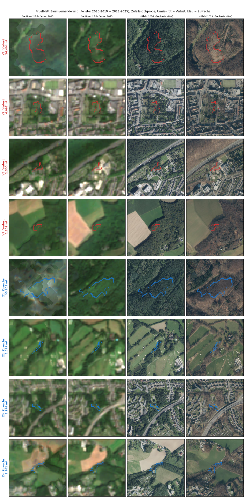

Kurz: Unsere erste Karte zeigte nur „grün oder nicht grün" und konnte Bäume nicht von Wiesen und Äckern trennen. Jetzt haben wir einen besseren Weg gefunden: Als Maßstab dienen Höhenmessungen aus dem Flugzeug. Damit haben wir dem Computer beigebracht, woran man im Satellitenbild einen Baum erkennt. Das Ergebnis findet große echte Waldabräumungen, aber noch keine verlässliche Gesamtbilanz, ob es mehr oder weniger Bäume gibt. Warum, steht in Schritt 5.
Kleines Wörterbuch. Karte (auch „Layer"): eine Ebene, die man im Geoportal über die Stadtkarte legt. Verlust: Hier war früher ein Baum und jetzt nicht mehr. Zuwachs: Hier war früher kein Baum und jetzt einer. Referenz: die Musterlösung, mit der wir den Computer anlernen und prüfen. EVI und NDVI: zwei Rechenwege, die aus dem Licht, das Pflanzen zurückwerfen, einen „Grün-Wert" machen (EVI ist unser erster Versuch, NDVI der einfachere Klassiker).
Unsere erste Karte sagte „viel Grün" für jedes 10-mal-10-Meter-Quadrat, das stark Pflanzen zurückwirft. Das trifft auf Bäume zu, aber auch auf Wiesen und Äcker, die im Sommer kräftig wachsen. Wir haben es nachgemessen: Wenn man die Grenze höher setzt, verliert man eher Wald als Felder (Details und Zahlen).
An der Höhe. Ein Baum ist höher als drei Meter, eine Wiese oder ein Acker nicht. Das Land NRW lässt das ganze Land aus dem Flugzeug fotografieren und berechnet aus den überlappenden Fotos eine Höhenkarte („nDOM": Höhe über dem Boden, ein Messwert alle 50 cm). Das ist unsere Referenz (Musterlösung): Wo viel über drei Meter hoch ist, steht ein Baum. Häuser sind auch hoch, deshalb haben wir sie anhand der OpenStreetMap-Gebäude herausgerechnet.
So lernt der Computer: Wir zeigen ihm Tausende Beispielflächen, bei denen wir aus der Höhenkarte schon wissen, ob dort ein Baum steht, zusammen mit dem, was der Satellit dort misst. Er sucht sich die Regel, die am besten passt, und schätzt danach auch an Orten selbst, die er nicht kannte. Wir haben 80 zufällig gezogene Quadratkilometer von Wuppertal ausgewertet (etwa 1,3 GB Daten). Es gibt diese Höhenkarte nur für 2025, nicht für frühere Jahre.

Wir haben acht Eigenschaften der Satellitenbilder ausprobiert (das Bild zeigt die wichtigsten drei, alle acht stehen in der Dokumentation) und gemessen, wie gut jede einen Baum von einer Wiese oder einem Acker unterscheidet. So liest du die Balken: Man zeigt dem Computer immer einen Baum und eine Wiese und fragt, welcher der Baum ist. 0 % heißt: er rät nur, 100 % heißt: er liegt immer richtig. Es ist keine Trefferquote in Prozent der Flächen (die steht unten bei „Alle Eigenschaften zusammen").


Das Bild zeigt nur die Mitte und das mittlere Band aller Punkte, deshalb sind die Unterschiede dort schwer zu sehen. Entscheidend ist der Rest: Die meisten Acker-Punkte springen stärker als die meisten Baum-Punkte, und genau das messen die 94 %. Die Auswertung rechnet für jeden einzelnen Punkt aus, wie stark er schwankt, und das trennt viel besser, als die Mittellinien erkennen lassen. Die gestrichelte Linie ist die Grenze „viel Grün" unserer ersten Karte.
Alle Eigenschaften zusammen genommen und angelernt: 98 %. Anders gerechnet: Auf Testflächen erkennt der Computer rund 96 von 100 Baum-Flächen als Baum und stuft rund 97 von 100 Acker- und Wiesenflächen richtig als Nicht-Baum ein. Wichtig: Wir haben die Hälfte der Quadratkilometer zum Anlernen genommen und die andere Hälfte zum Prüfen. So wissen wir, dass es auch an Orten funktioniert, die der Computer nicht kannte. Benachbarte Orte sind sich aber ähnlich, die echte Quote kann etwas niedriger liegen.
Für die Veränderung brauchen wir eine Baumkarte aus früher und eine aus später, die wir vergleichen. Wir nehmen zwei Fenster: 2015 bis 2019 und 2021 bis 2025. Jedes Fenster fasst fünf Sommer zusammen, so fallen einzelne Ausreißer-Jahre weniger ins Gewicht. Das Jahr 2020 lassen wir weg, damit sich die Fenster nicht berühren.
Der Computer lernt an den Satellitenbildern 2021–2025 (zeitgleich zur Höhenkarte 2025) und wendet dieselbe Regel danach auf 2015–2019 an. Eine Fläche zählt als Verlust, wenn sie früher Baum war und später nicht mehr.
Warum nicht alle elf Jahre auf einmal? Ein Baum, der 2020 gefällt wird, springt in den Jahren davor und danach stark hin und her und würde dann wie ein Acker aussehen. Er fiele aus der Baumkarte, bevor wir seinen Verlust sehen können. Deshalb getrennte Fenster.
Wir haben zufällig ausgewählte „Verlust"- und „Zuwachs"-Flächen auf echten Luftbildern angesehen. So liest du das Bild: Jede Zeile ist eine Fläche, die der Computer meldet (V1 bis V4 = Verlust, Z1 bis Z4 = Zuwachs; die Zahl ist die Größe). Die zwei linken Spalten sind Satellitenfotos von 2015 und 2025 (grob und unscharf). Die zwei rechten Spalten sind echte Luftbilder von 2016 und 2023 (die Jahre passen nicht genau, weil es nicht jedes Jahr Luftbilder gibt). Der Umriss zeigt die Fläche. Schau vor allem auf die rechten Bilder: Steht bei „Verlust" 2016 ein Wald und 2023 nicht mehr? Steht bei „Zuwachs" 2016 nichts und 2023 ein Wald?

Dieselbe Prüfung haben wir in zwei früheren Zufallsstichproben gemacht (Stichprobe 1, Stichprobe 2; eine Zuwachsfläche kommt in beiden vor, weil die Auswahl zufällig ist). Zusammen waren das 10 verschiedene Verlustflächen: 4 eindeutig abgeräumter Nadelwald, 1 wahrscheinlich, 5 unklar. Auffällig: Die drei größten (über 2 Hektar, etwa drei Fußballfelder) waren alle eindeutig; von den sieben kleineren war nur eine eindeutig (6.698 m²) und eine wahrscheinlich. Das ist eine kleine Stichprobe, aber ein Hinweis, dass man nur große Flächen ernst nehmen sollte. Warum die Bäume weg sind (Sturm, Käfer, Holzeinschlag), wissen wir nicht.
Zuwachs: Von den insgesamt 9 verschiedenen angesehenen Zuwachsflächen war keine überzeugend neuer Wald. Meist sind es Ränder von Wald, Gärten oder Grünstreifen, die der Computer fälschlich meldet. Ein möglicher Grund: 2015 liegen vermutlich weniger brauchbare Satellitenbilder vor als in den späteren Jahren, und 2018 war ein trockener Sommer (beides haben wir nicht eigens gemessen).
Die Zahlen, die der Computer ausgibt, für die ganze Stadt (rund 168 km² ausgewertet): Verlust rund 5,5 km², Zuwachs rund 10 km², Baumfläche etwa 70 km² im früheren und 75 km² im späteren Fenster. Weil der „Zuwachs" größtenteils nicht stimmt und auch viele kleine „Verluste" nicht, darf man diese Bilanz nicht als Aussage zum Baumbestand verwenden, weder für einen Rückgang noch dagegen.
Alle Rechenschritte stehen im Repo (scripts/baummaske.py, scripts/baummaske_test.py, scripts/ndom_select.py) und in der Dokumentation.